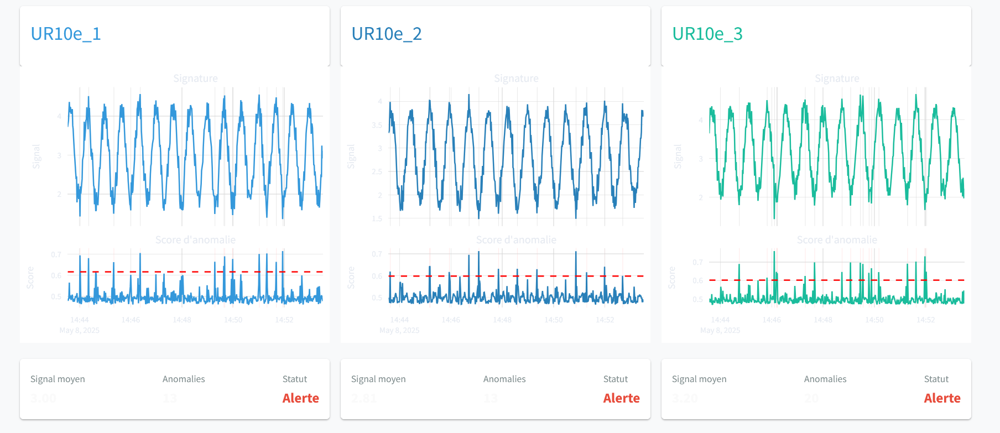
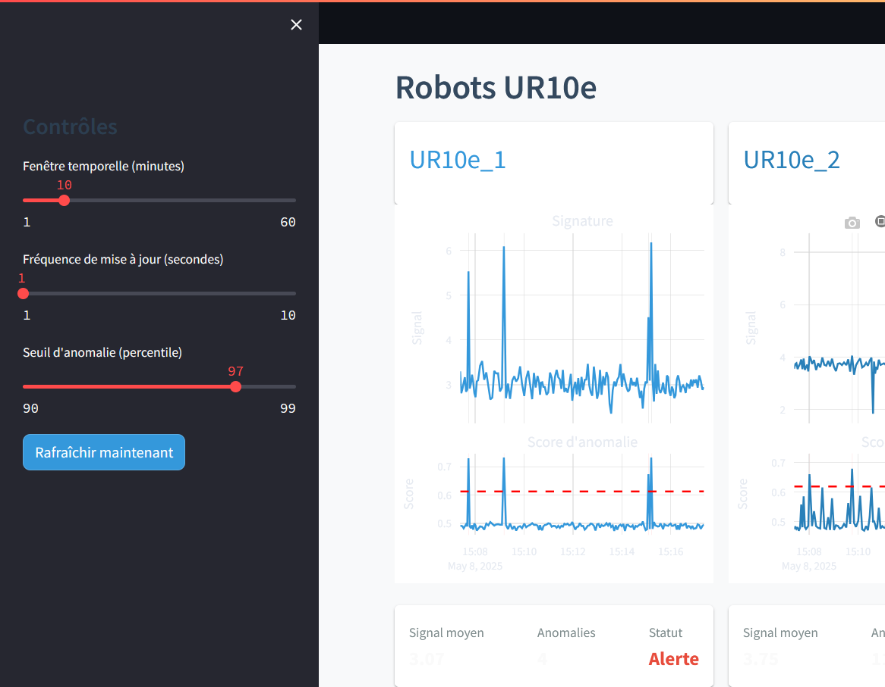

Deployment and Interface
Final Step of the Pipeline: Deployment
Once the analysis and prediction models have been built, the final step of our pipeline is to deploy the system to make it accessible to end users (engineers, operators, technicians).
The application is based on Streamlit, chosen for its following advantages:
Why Streamlit?
✔️ Simplicity: rapid development with minimal code
✔️ Customization: interactive and adaptable interface
✔️ Direct integration with Python notebooks and scripts
✔️ Real-time updates ideal for continuous signals
Note
Streamlit is an open-source Python framework for creating interactive web applications for data science and machine learning, without requiring web development knowledge.
Interface Components
The Streamlit interface developed provides a comprehensive visualization of the Sigma-RUL system:
Digital signatures of components (robots, conveyors, rail)
Reconstructed series and future predictions by the LSTM autoencoders
Anomaly score visualized with an adjustable threshold
Reconstruction and prediction errors
Dynamic RUL estimation (Remaining Useful Life)
Component status: a dynamic text alert indicates the current status:
🟢 Normal: operating within normal thresholds
🟡 Warning: beginning deviation or suspicious behavior
🔴 Alert: confirmed anomaly or very low RUL
Note
This status is automatically updated based on the anomaly score and RUL estimation.
Hint
The interface allows for immediate diagnosis of each component’s behavior with dynamically updated graphs.
Monitored Components
🤖 3 x UR10e Robots: Robot1, Robot2, Robot3
🛤️ Moving Rail
📦 Box Conveyor (Conveyor_Box)
🍾 Bottle Conveyor (Conveyor_Bottle)
Local Deployment vs. Online Version
Important
This application collects real-time data from RoboDK, a software installed locally. To ensure proper data collection and analysis, the application must be run locally on the same machine as RoboDK.
Note
For demonstration purposes, an online version of the application has also been developed. It relies on pre-recorded data and illustrates the analysis and visualization functionalities of the system.
👉 Link to the demo version: https://sigma-rul-demo.streamlit.app
Interface Preview
Here’s a preview of the Streamlit application:
{kind=link}
Interactive Controls
Hint
Users can dynamically adjust analysis and display parameters for each monitored component.
Dynamic and Customizable Interface
🕒 Time Window: adjust the historical period to analyze
📊 Number of Points Displayed: choose how many data points appear on the chart
⚠️ Anomaly Thresholds: set thresholds to detect anomalies
🔄 Refresh Rate: control how often data is updated
🎯 Component Selection: pick which component to analyze
👁️ Chart Visibility: enable or disable individual data series
These controls offer great flexibility for real‑time analysis while ensuring a clear and seamless user experience.
{kind=link}
Access to the Source Code
The full application code is available on GitHub:
👉 Link to the GitHub repository: https://github.com/MerlinMaven/sigma-industrial-ai.git
Note
The repository contains the main application script (app.py), trained models, and configuration files necessary for local deployment of the interface.